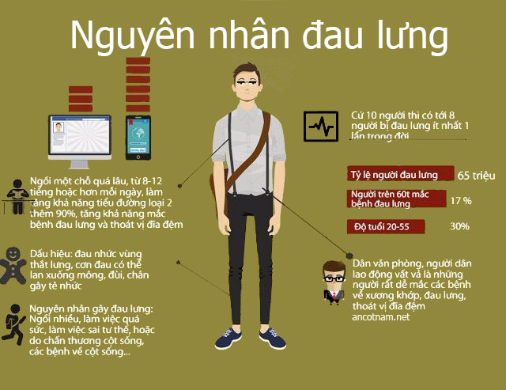
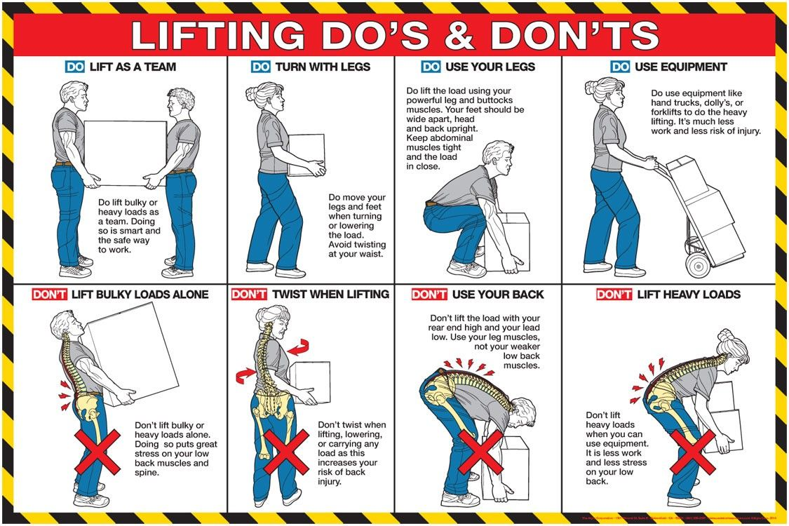
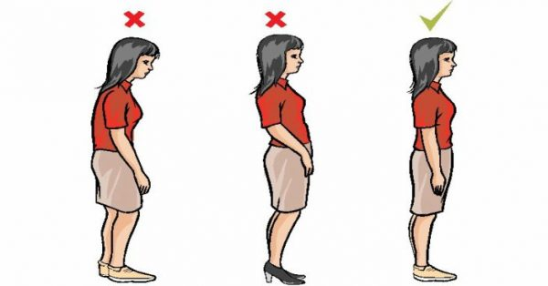
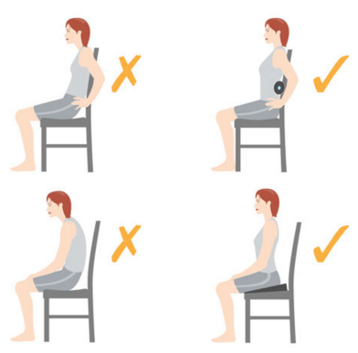
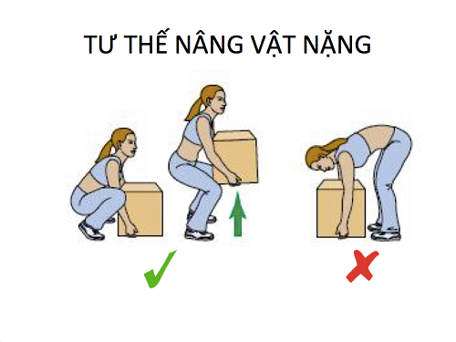

1. NGUYÊN NHÂN

> Tôi dành quá nhiều thời gian của mình cho việc ngồi:
trung bình, tôi dành 7,8 tiếng để ngồi học trên lớp, sau đó là khoảng 3,4 tiếng cho việc ngồi học ở nhà,
quả thật, phần lớn thời gian tôi dành cho việc ngồi và hầu như không có luyện tập thể dục thể thao,
Và sự khác biệt thể chất lớn nhất giữa hồi cấp ba, so với lên Đại học có lẽ là: cơ bắp tôi bị toi nhỏ lại,
hoạt động chậm lại không còn nhanh nhạy như ngày xưa, và cơ thể có vẻ yếu đi.
> Qua tìm hiểu thì có lẽ cũng do một phần áp lực học tập, lối sống giờ giấc sinh hoạt không khoa học như là thức đêm , dậy muộn, bỏ ăn sáng, ít uống nước,.. dẫn đến tôi thường xuyên bị căng thắng, mệt mỏi, lâu dần ảnh hưởng tới thể chất và phát triển thành đau lưng.
> Qua tìm hiểu thì có lẽ cũng do một phần áp lực học tập, lối sống giờ giấc sinh hoạt không khoa học như là thức đêm , dậy muộn, bỏ ăn sáng, ít uống nước,.. dẫn đến tôi thường xuyên bị căng thắng, mệt mỏi, lâu dần ảnh hưởng tới thể chất và phát triển thành đau lưng.
2. TÁC HẠI
> Tác hại lớn nhất mà tôi gặp phải đó chính là:
- Thường xuyên khó chịu khi phải ngồi xuống học học tập, hay làm việc dẫn tới việc chán nản, mất tập trung dẫn và tất nhiên là kết quả thu được không được cao.
- Tôi bị dày vò bản thân trong cơn đau, và không thể làm gì được, phải chật vật chuyển từ ngồi sang nằm, rồi lại sang đứng để có thể hoàn thành việc học hành cũng như công việc của mình
3.GIẢI PHÁP
> Sau một hồi tìm hiểu thì tôi nhận thấy có một vài giải pháp phù hợp cho bản thân:

- Giờ giấc sinh hoạt điều độ: Thay vì cứ ngồi ì ra một chỗ, tôi quyết định sẽ sau 30p ngồi t sẽ dành ra 2-3p đi lại vận động.
- Tất nhiên sẽ chăm chỉ thể dục, thể thao hơn, thay vì căm đầu vào học hay làm một thứ gì cho tới kì cùng xong bằng thôi.
Thường xuyên uống nước
Massange vùng lưng
Chườm nóng or lạnh
Bổ sung vitamin D
Sử dụng tỏi
Nghỉ ngơi
4. PHÒNG TRÁNH

> Qua tìm hiểu, tôi muốn đưa ra một số cách phòng tránh:
- Tư thế đứng đúng
- Tư thế ngồi đúng
- Tư thế nâng vật nặng đúng
- Tư thế di chuyển đúng


